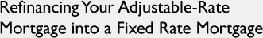

| 
(ARA) - If you are among the millions of homeowners with an adjustable-rate mortgage (ARM), you may be facing increasing interest rates as your loan adjusts. Refinancing might be the solution to your problem.
Homeowners refinance for a variety of reasons including taking cash out of their home's equity to make home improvements, consolidating debt, and of course to obtain a more favorable interest rate. However, many Americans are now refinancing primarily to move from an adjustable rate to a predictable, fixed-rate mortgage to avoid future interest rate adjustments.
"There are many factors to consider when refinancing your mortgage depending on your particular situation," says Jim Ferriter, executive vice president for GMAC Mortgage. "If you have been living in your home for several years or if you're facing a rate reset on an adjustable-rate mortgage, you may find that refinancing pays for itself from the resulting lower monthly payment or from feeling the comfort of having a fixed monthly payment."
Here are some tips from GMAC Mortgage to help you consider whether refinancing is an appropriate option for you.
Know the terms of your current mortgage.
How often will your mortgage adjust? How much will it adjust? These are both important factors to consider when determining if refinancing is a viable option. Contact your lender now so that you are fully aware of the terms of your ARM loan to avoid any surprises when your mortgage adjusts.
Think about how long you will live in your home.
A big factor in deciding to refinance is calculating how long you will continue to live in your house. The longer you live in your home, the more money you can potentially save in interest costs from refinancing. GMAC Mortgage has several helpful tools on its Web site, http://www.gmacmortage.com, including a break-even calculator that will tell you how many years you will need to live in your home to recoup the cost of refinancing.
Maintain a good credit score.
A good credit score is one factor that could enable you to obtain more favorable financing terms. Paying bills on time and keeping credit card debt low are easy ways to maintain good credit. Check your credit report every year to ensure there are no negative marks on your credit history, such as missed credit card payments or large account balances.
Determine refinancing costs.
Consult a loan officer to figure out what fees are involved with refinancing. You may have to pay an application fee as well as closing costs. You also may choose to pay discount points to buy down the interest rate. By knowing the upfront costs for refinancing, you can determine exactly how much time it will take to recover the expense.
Roll-in refinancing.
You can avoid paying fees upfront and immediately enjoy lower monthly payments, by rolling-in your closing costs into the new loan. Rolling-in your costs is particularly appropriate if you will sell your home or refinance again in a few years because having a higher loan balance will likely matter less than being able to enjoy the immediate benefit of lower monthly payments.
Every homeowner has a different scenario for determining if refinancing is a good option. Here's the bottom line: it might make sense to refinance if you have the opportunity to save money by lowering the cost of your monthly payment -- or the opportunity to seek the comfort of knowing your mortgage payment will remain fixed.
For more information on refinancing options, call (800) 888-GMAC (4622).
This Article is Courtesy
of ARA Content
<< Go
Back to the Real Estate Resource Center Home Page
Content by 4
Site USA, LLC
|